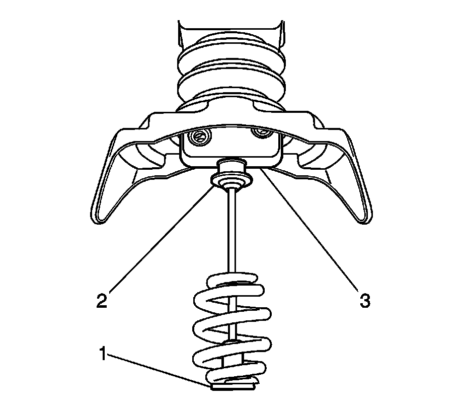
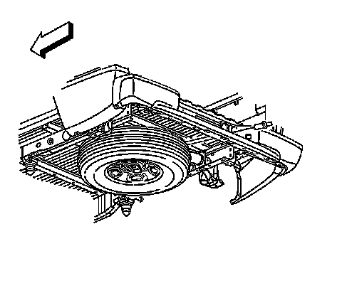
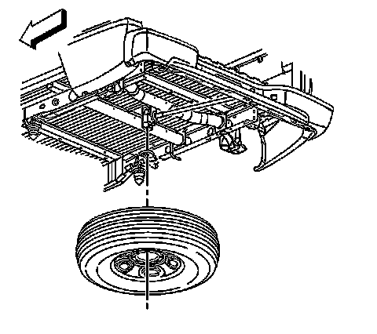
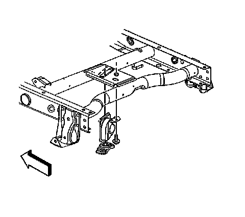
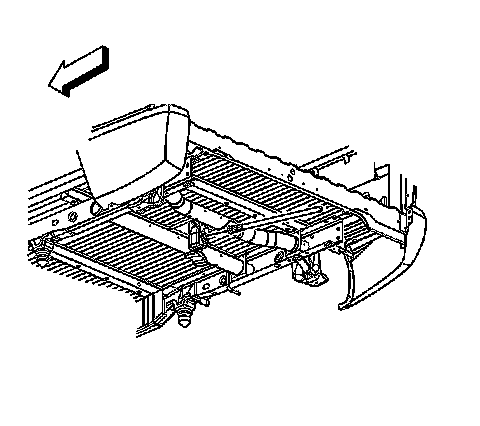

Spare Tire: Service and Repair
Tire Hoist and Shaft Replacement
Tire Hoist Secondary Latch Mechanism
Important: If the spare tire hoist has been fully raised without a spare tire in place, the secondary latch mechanism may have become engaged. If this has occurred the hoist will not lower and the following steps will need to be followed:

1. Rotate the hoist shaft counterclockwise until approximately 15 cm (6 in) of cable (1) is exposed.
2. While holding the latch pin (3), fully depress the latch button (2) and release the secondary latch from the hoist assembly. Some side-to-side and/or up-and-down movement may be necessary to disengage the latch mechanism.
3. Continue rotating the hoist shaft counterclockwise in order to lower the hoist the rest of the way.
4. If this does not release the secondary latch, the spare tire hoist will need to be replaced. See the following procedure.
Removal Procedure

1. If the vehicle is equipped with a spare tire stowage lock cylinder, open the spare tire lock cover on the bumper and using the ignition key, remove the lock.
Notice: Use only hand tools to lower and raise the spare tire hoist assembly. Do not use air tools. The use of air tools at high speeds will damage the spare tire hoist assembly.

2. Rotate the hoist shaft counterclockwise in order to lower the spare tire to the ground. Continue to rotate the shaft until the spare tire can be pulled out from under the vehicle and removed. If the spare tire does not lower to the ground, the secondary latch is engaged causing the tire not to lower.
3. If the secondary latch is engaged and the cable end is visible, perform the following procedure:
1. Tighten the cable by rotating the hoist shaft clockwise until you hear 2 clicks or feel it skip twice. You cannot overtighten the cable.
2. Loosen the cable by rotating the hoist shaft counterclockwise 3 or 4 turns.
3. If the spare tire can be lowered, repeat steps 1 and 2 to see if the spare tire can be removed.
4. If the spare tire cannot be lowered, rotate the hoist shaft counterclockwise until approximately 15 cm (6 in) of cable is exposed.
5. Raise and support the vehicle. Refer to Lifting and Jacking the Vehicle.
6. Place a transmission jack, or equivalent, under the spare tire.
7. Position the center of the transmission jack under the secondary latch release button at the center of the spare tire. Arrange the arms of the transmission jack so they will support the tire after it has been released.
8. Raise the jack until the spare tire stops moving upward and is firmly held in place, releasing the secondary latch.
9. Lower the tire. If the spare tire is hanging by the cable, rotate the hoist shaft counterclockwise until the tire is low enough to remove.
4. If the secondary latch is engaged and the cable end is NOT visible, perform the following procedure:
1. Raise and support the vehicle. Refer to Lifting and Jacking the Vehicle.
2. Place a transmission jack, or equivalent, under the spare tire.
3. Position the center of the transmission jack under the secondary latch release button at the center of the spare tire. Arrange the arms of the transmission jack so they will support the tire after it has been released.
4. Raise the jack until the spare tire stops moving upward and is firmly held in place, releasing the secondary latch.
5. Lower the tire and remove it from the jack.
5. Raise and support the vehicle if it is not already raised. Refer to Lifting and Jacking the Vehicle.
6. Depress the tabs, remove the guide shaft from the hoist collar, and slide the shaft toward the bumper.
7. Remove the collar from the hoist

8. Remove the bolt.
9. Remove the hoist from the bracket.

10. Remove the spare tire hoist shaft guide from the bumper.
Installation Procedure
1. Install the spare tire hoist shaft guide to the bumper.
2. Install the hoist to the crossmember.
Notice: Refer to Fastener Notice.
3. Install the bolt.
Tighten the bolt to 40 N.m (30 lb ft).
4. Install the collar to the hoist
5. Install the shaft to the hoist.
6. Install the spare tire to the hoist.
Notice: Use only hand tools to lower and raise the spare tire hoist assembly. Do not use air tools. The use of air tools at high speeds will damage the spare tire hoist assembly.
7. Rotate the hoist shaft clockwise until the spare tire is in position and the hoist clicks 2 times or it skips twice. You cannot overtighten the cable.
8. Remove the safety stands.
9. Lower the vehicle.
10. Install the spare tire stowage lock cylinder.